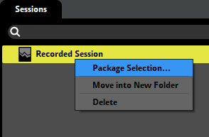
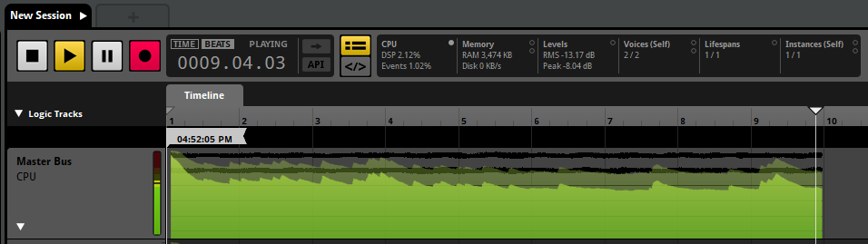
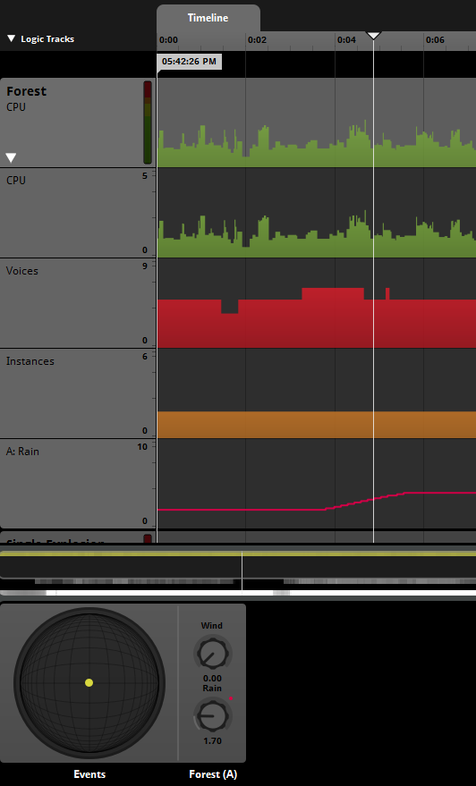
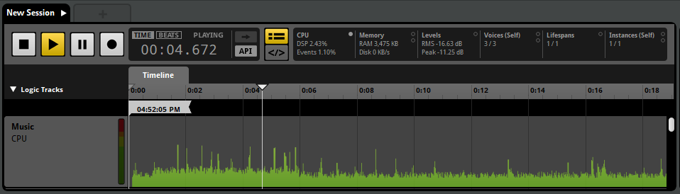

FMOD Studio User Manual 1.10
FMOD Studio includes a profiler tool that allows you to assess the performance and output of your projects. The profiler can be used to check performance of events and projects directly in FMOD Studio, and can also work when a project is linked to a game running on a computer or console development kit to assess performance at runtime.
Profiling in Studio provides a way to both inspect and debug audio. This can be performed within the tool or, more importantly, through a network connection with your game via live update.
You can open the profiler window by clicking "Profiler" in the "Window" menu.
To connect to your game with Live Update, there are two requirements: Your game's code must set the FMOD_STUDIO_INIT_LIVEUPDATE flag when calling Studio::System::initialize, and you must connect to the game over the network using FMOD Studio.
For more information about the FMOD_STUDIO_INIT_LIVEUPDATE flag, see Studio::System::initialize and FMOD_STUDIO_INITFLAGS in the FMOD Studio Programmer's API Documentation.
Ensure that you disable Live Update initialization before shipping a game.
When using the FMOD Unity integration, Live Update is automatically enabled by default. To check this, select "Edit Settings" from the "FMOD" menu in your Unity project.
By default, Live Update will be set to enabled for "Play in Editor" and disabled for built games. A text box underneath these settings will inform you what port is being used.
Starting your game or beginning in the "Play in Editor" mode will send information over the specified port.
When using the FMOD Unreal Engine 4 integration, Live Update is automatically enabled by default. To check this, select "Project Settings" from the "Edit" menu in your Unreal Engine 4 project, and look in the "FMOD Studio" section in "Plugins".
Live Update will be set to enabled for all non-final builds by default. You can specify a port number in the "Live Update Port" option under the "Advanced" settings.
Starting your game or beginning in the "Play in Editor" mode will send information over the specified port.
When using the FMOD low-level API, you can enable Live Update by using FMOD_STUDIO_INIT_LIVEUPDATE when initializing the FMOD Studio system.
By default, FMOD Studio streams to localhost:9264, however you can specify a specific port using Studio::System::setAdvanceSettings.
After correctly initializing and starting your game, open your FMOD Studio project and select "Connect to Game" in the "File" menu. The dialog prompts for an I.P. address for connecting to the machine where the game is running. There are several ways of providing the same default address:
localhostlocalhost:(port number)127.0.0.1127.0.0.1:(port number)
In this situation "localhost" is referring to the machine that the FMOD Studio tool is running on.
The default port number is 9264. It is possible to specify which port to use by altering the FMOD_ADVANCESETTINGS before initializing FMOD in your game code.
Once you are connected to your game, you will see a green "Live Update On" icon at the bottom right of the FMOD Studio window.
There may be instances where you wish to save lots of profiles of your game, for example to profile different levels to ensure the volumes and mix is consistent, or to see the differences between build versions.
The profiler window provides the session browser. Here you can see all previously recorded sessions, create new ones, and organize them into folders for easy access.
To create a new folder, right click in an empty space of the session browser and choose "New Folder". You can even right click on an existing session and choose "Move Into New Folder" to move that session into a newly created folder on the same hierarchical level.
You can also export sessions. This is useful for sharing information on any issues encountered either with fellow audio team members or with FMOD Studio support. To do this, right click on a recorded session or folder in the sessions browser and choose "Package Selection".

In this dialog you can choose whether to bundle the audio assets and/or the banks along with the session(s). This is useful for when the person you are sending this package to does not have access to the full FMOD Studio project in question.
To record a new session, right click in an empty space of the sessions browser and select "New Session" to create a blank session. Click on the "Record" button in the transport controls, represented by a circle, to begin recording. If you do not have a session actively selected in the sessions browser, clicking "Record" automatically creates a new session.
You should be able to see waveform data coming in on the master track, as well as a graph overlay.

Once you have finished capturing data, press the "Stop" button in the transport bar.
By default, a track for each recorded event will automatically be added to the session once the recording is completed. You can optionally scope in mixer strips or events to see information pertaining to those items by dragging and dropping them into the profiler session.
Once you have a recorded session, you can now playback the recorded session, as you would with an event, and hear your game's recorded output. Areas that show instantaneous values (such as the transport bar and 3D View) correspond to the playhead position. You can also use loop regions to focus in on parts of the recording.
Each event or bus in the profiler can be used to view more information about it. You can switch which property of that event or bus is graphed by clicking on the categories of the master profiling statistics in the transport controls.
You can hover over graphs to see the value at a particular point.
The current graphs available are:
CPU (%): Displays how much of the CPU is being used. On the master bus, the transparent background graph represents both time spent updating events and the mixer DSP.
Levels (dB): Shows how loud the output of that event or bus is in dB. The lines represent the peak value and the solid colors represent the RMS (Root Mean Square).
Memory (KB): Only available on the master bus. Displays how much of the available RAM is being used.
File I/O (KB): Only available on the master bus. Displays the file I/O used for sample data, stream data, and bank metadata loading. The event instance lifetime view has indicators for when event instances are waiting for sample data to load in.
Voices: Available for "Self" and "Total". Displays how many voices are spawned in the game world. The transparent background graph represents voices and virtual voices.
Instances: Available for "Self" and "Total". Displays how many instances of events are spawned in the game world. The transparent background graph represents instances and virtual instances.
For "Voices" and "Instances" you can choose to show either self or total. Self is referring to voices or instances that are spawned only from that event. Total is referring to voices or instances that are also spawned from nested or references events.
Keep in mind that you can also see a summary of the active graph type for the entire session in the birds eye view.
The CPU usage displayed on the master bus of the profiler is split into 2 streams:
DSP (solid colored graph): Indicates the percentage of time the mixer thread is taking. The percentage represents how long it takes, in relation to the amount of time it has to complete a mix. For example, on XBox One where a mix block is 10ms (512 samples), 50% usage represents the mixer thread taking 5ms to complete.
DSP Self (solid colored graph): Indicates the percentage of time taken on the mixer thread for the given item, exclusive of children routing into it.
DSP Total (transparent colored graph): Indicates the percentage of time taken on the mixer thread for the given item, inclusive of children routing into it.
Events (transparent colored graph): Indicates the percentage of time the Studio update thread takes to complete. The update thread typically runs every 20ms in its own thread, so the percentage indicates how much of the 20ms is used up.
CPU numbers do not include time spent calling update() from you game thread (which theoretically should be quite small). FMOD Studio also uses some other smaller worker threads (e.g. File I/O thread) which aren't included in these numbers.
Along the right hand side of the profiler window is the overview section.
At the top is a 3D view of the entire session, displaying all event instances and where they spawned in relation to the player. Playing event instances are shown as filled circles, while virtual events are hollow circles. Stopped event instances become dimmer and fade over time, which assists with finding short-lived event instances. Once an event instance has been released it is removed from the 3D view.
The profiler provides additional information about each event instance.
Clicking on an event in this view highlights its associated track and also presents a secondary 3D view in the deck which shows only events of a given type.
If an event instance is selected, the deck displays that instance's parameter values over time. Right clicking a parameter dial allows you to add a graph for that particular event instance's parameter. This is added as a subgraph in the multitrack view.

Underneath the 3D View is a list of all the snapshot activities instanciated. Once a snapshot has started it will appear in this list. The percentage to the right of the name of the snapshot indicates the intensity of the snapshot. The background of the name will also display how much intensity is being applied at that moment in time. Once a snapshot has been released it will be removed from this list.
You can view the snapshot's mixer view by right clicking on any snapshot in this list and choosing "Open in Mixer".
All session captures also capture the API calls made by your FMOD Studio project.
Located at the top of the session editor window are two buttons. The track view and the API view.
For more information on the API view, please see the API Capture and Playback section below.
Recording a profiler session also captures all API calls made by FMOD Studio during that session.
To view the API calls being made, click on the API View button (</>) located next to the time indicator.
You can copy text from the API view if you need to view it in an external text editor, however it is important to note that larger captures are truncated. After recording a profiler session, ensure that you save your project so that these sessions are stored in your project's folder. Now you can right click on a session and choose "Open in Explorer/Finder" and view the API captures text file.
The captured API calls are not written in any particular programming language, instead only displaying what FMOD API function was called and the arguments passed into it. All comments are prefixed with a hash (#) and do not affect playback.
FMOD Studio gives the option to play back recorded profiler sessions using API calls rather than playing back recorded audio. This is useful for situations such as debugging an audio issue replicated in a recorded session or making adjustments to events and buses then auditioning them in a real game scenario.
You can toggle between playing back with the recorded audio or with the API capture by clicking on the "API" button next to the time indicator.

While in this mode you can hear events being played as if playing them through the event editor, so random playlists in multi instruments and scatterer instruments have randomized results.
You have to rebuild the banks after making a change in order to hear that change in API playback mode.